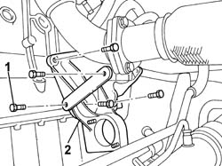
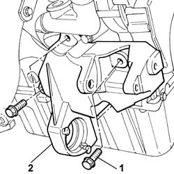
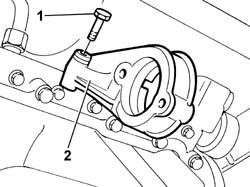

2710A35 INTERMEDIATE DRIVE SHAFT MOUNT - R R
- Path
- Procedures > 27 AXLE > 2710 FRONT AXLE > 2710A DRIVE SHAFTS AND JOINTS > 2710A35 INTERMEDIATE DRIVE SHAFT MOUNT - R R
- Kind
- repair procedure (removal / refitting; the operation number is the code)
- Applies to
- all engines; all production periods
- Interactive page
- https://sloeber94.github.io/elrnDB-fDct/en/#/244001066
Applies to: all engines; all production periods
 Removing
Removing
 Refitting
Refitting- Position the vehicle on the lift.
Op. 4450B04 RIGHT FRONT WHEEL R R
Applies to: engines: 2.3 JTD 16V, 2.8 JTD 8V; all production periods
Refitting
Removing- Fit the intermediate drive shaft bearing support.
- Tighten the fixing bolts to the cylinder block/crankcase to torque.
 | Value - daNm | Fastening | Component | Ø |
|---|---|---|---|---|
. | 5 | Bolt | FRONT DRIVE SHAFT BEARING MOUNT | M10 X 1.25 |
Applies to: all engines; all production periods
Op. 2710A31 INTERMEDIATE DRIVE SHAFT - R R
Op. 7055B54 UNDER-ENGINE GUARD - R R
Op. 4450B04 RIGHT FRONT WHEEL R R
- Remove the vehicle from the lift.
Applies to: engines: 2.0 16V; all production periods
Op. 1092C11 POWER STEERING PUMP DRIVE BELT - R R FOR VERSIONS WITH AIR CONDITIONER
Op. 4130B24 POWER STEERING PUMP R R FOR VERSIONS WITH AIR CONDITIONER
-
1. Undo the bolts securing the mount to the cylinder block/crankcase.

Applies to: engines: 2.0 JTD 8V; all production periods
1. Undo the bolts securing the mount to the cylinder block/crankcase.
2. Remove the intermediate drive shaft bearing support.

Applies to: engines: 2.3 JTD 16V, 2.8 JTD 8V; all production periods
1. Undo the bolts securing the mount to the cylinder block/crankcase.
2. Remove the intermediate drive shaft bearing support.

Applies to: engines: 2.0 16V, 2.0 JTD 8V; all production periods
- Fit the intermediate drive shaft bearing support.
- Tighten the fixing bolts to the cylinder block/crankcase to torque.
Applies to: engines: 2.0 16V; all production periods
Op. 4130B24 POWER STEERING PUMP R R FOR VERSIONS WITH AIR CONDITIONER
Op. 1092C11 POWER STEERING PUMP DRIVE BELT - R R FOR VERSIONS WITH AIR CONDITIONER